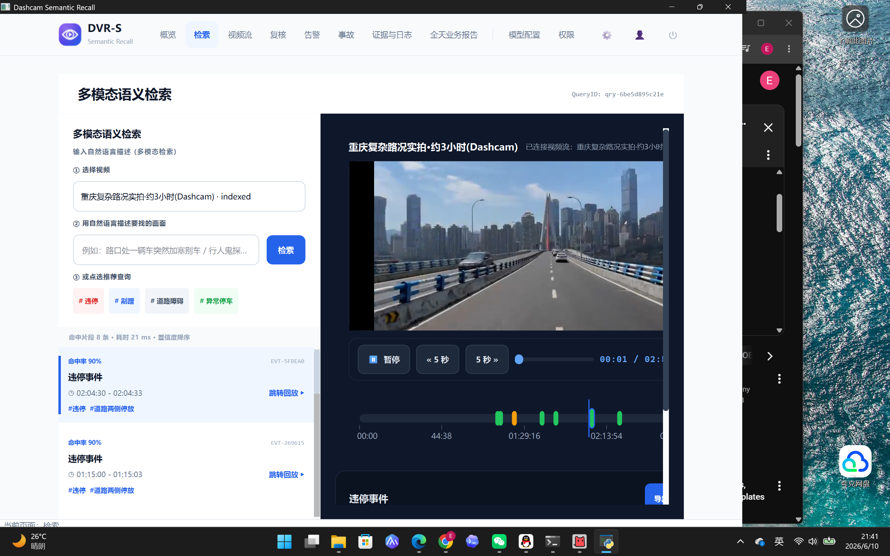
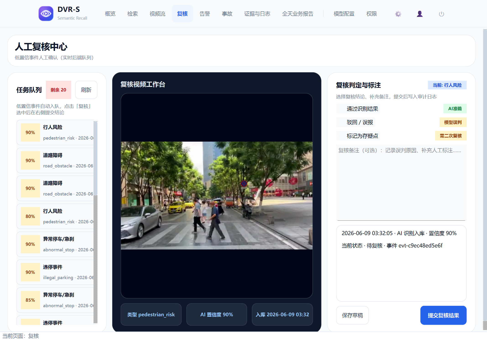
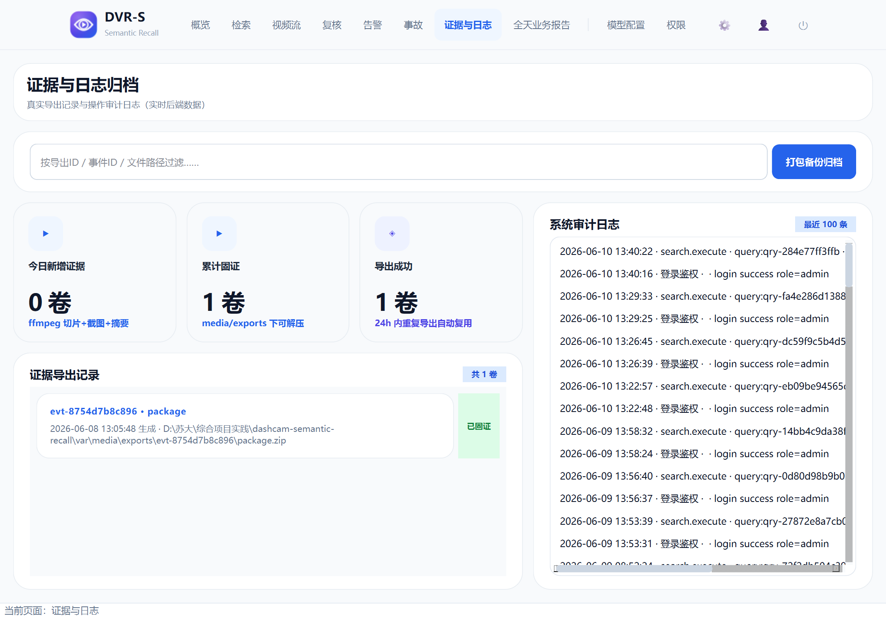
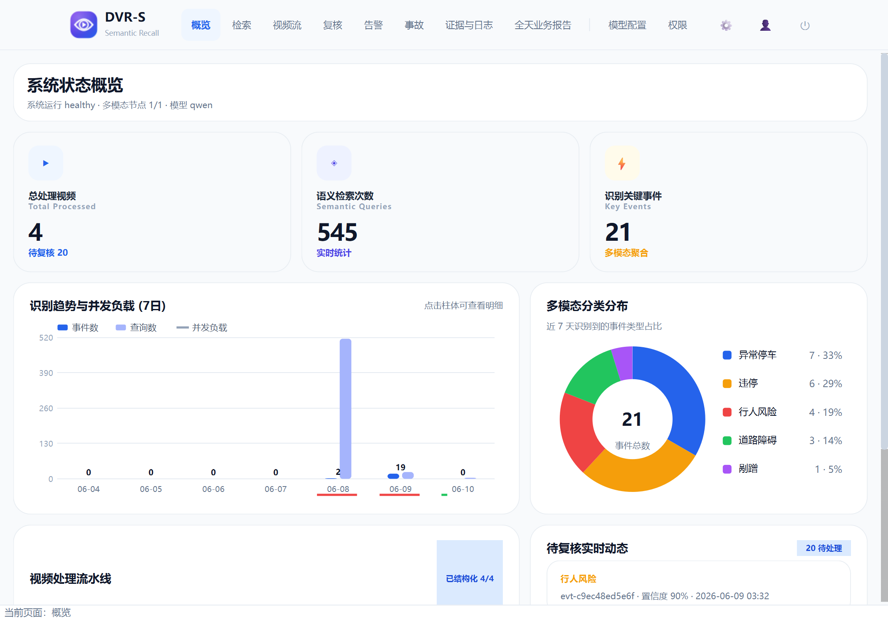
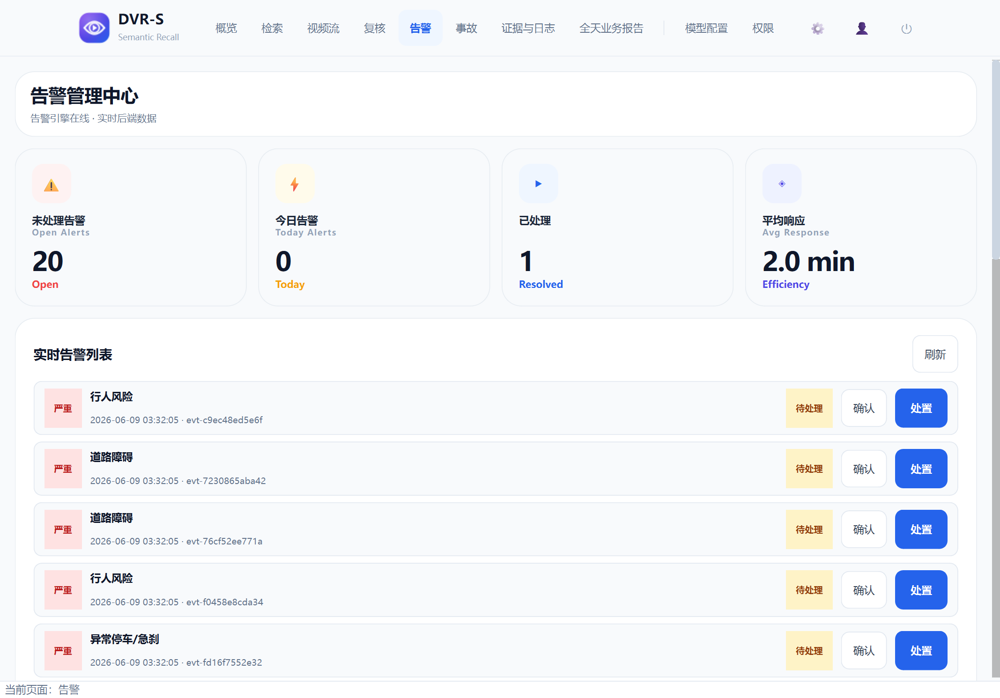

一句"找一下违停的片段"，从数小时行车录像直接跳到对应画面，并导出证据包
| 需求 | 状态 | 实际交付与证据 |
|---|---|---|
| FR-01 视频接入与预处理 | ✅ 完成 | 上传（≤10GB 校验，超限 413）→ ffprobe 探测 → 转码 → 30s 切片 → 抽帧 → 缩略图，全部真 ffmpeg；单个 + 批量导入均可用；处理进度可轮询（GET /status）。同步处理模式，长视频需等待——异步队列列为产品化增强。 |
| FR-02 关键帧分析与语义事件生成 | ✅ 完成 | Qwen-VL 真视觉理解已联调：约 3 小时真实路况 + 2 分钟 UK 路况共产出 21 个真实语义事件（违停 / 行人风险 / 道路障碍 / 异常停车 / 剐蹭）；滑窗聚合 + 置信度阈值分流复核。默认 mock 演示路径保留，口径在 README 写明，不冒充真模型。 |
| FR-03 自然语言语义检索 | ✅ 完成 | 向量召回 + 关键词重排混合检索；PG 库内排序 / SQLite numpy 降级；召回质量有专项测试（自然语句不含类别名词的 top-1 断言 + 负样本）；每次查询写检索留痕。 |
| FR-04 精准回放 | ✅ 功能完成 ⚠ 指标未压测 |
python-vlc 真嵌入播放（D3D11VA 硬解），点击检索结果 seek 到事件起点；视频流接口已加鉴权（短时效签名 ticket 供 VLC 直连）。"跳转≤1s / 启动≤2s"未做正式计时压测——演示中体感即时，但我们不拿体感冒充数据。 |
| FR-05 结果展示与时间轴 | ✅ 完成 | 结果卡片（置信度色块 / 相关度 / 摘要 / 标签）+ 事件时间轴高亮 + 详情面板三指标联动；选中事件四个组件同步跳转。 |
| 需求 | 状态 | 实际交付与证据 |
|---|---|---|
| FR-06 证据导出 + 第三方接口 | ✅ 完成 | 真 ffmpeg 切片 + 关键帧截图 + JSON/Markdown 摘要打 zip；24h 内同事件去重复用；受控批量导出（≤50，失败隔离）；桌面端可一键"批量归档全部事件"。第三方只读接口走 X-Api-Key 鉴权，未配置密钥默认整组关闭（503）。 |
| FR-07 操作日志与查询留痕 | ✅ 完成 | 所有写操作落 audit_logs（登录 / 上传 / 检索 / 导出 / 复核 / 告警处置 / 规则修改 / 用户创建），X-Request-Id 全链路贯穿；桌面端证据页直接展示真实审计流水（库内已积累 580+ 条）。 |
| 人工复核闭环 | ✅ 完成 | 低置信事件自动入队；复核工作台加载该事件的真实关键帧 + 元数据 + 流转记录；提交结论（通过/驳回/存疑）真实写库、可修正事件类型与标签、记审计、队列即时刷新；备注支持草稿暂存。 |
| FR-08 看板 / 告警 / 事故 / 日报 | ✅ 完成 | 全部由真实库实时派生：7 日趋势、事件类型分布、待复核动态、告警分级列表（确认 / 处置真实写库）、事故卡片（大模型摘要重新生成）、日报导出 Markdown/JSON。告警分级规则可编辑并持久化，保存后列表立即按新规则重新分级。 |
| FR-09 模型配置 / 角色权限 | ✅ 主体完成 ⚠ 部分写操作未做 |
模型 / 存储 / 安全配置实时只读展示（密钥不回传明文）+ 模型连通性自检；权限矩阵由真实权限目录 × 角色推导，可导出 CSV；新增用户真实入库（bcrypt，立即可登录）。未做：用户的修改 / 禁用（PATCH/DELETE）、自定义角色编辑——三角色（admin/reviewer/user）固化已覆盖课程场景。 |
| 需求 | 状态 | 实际交付与证据 |
|---|---|---|
| NFR-01 鉴权与访问控制 | ✅ 完成 | bcrypt 密码 + PyJWT Bearer Token；admin / reviewer / user 三角色 RBAC，敏感接口逐一限权（403 有测试覆盖）；生产环境强制非默认 JWT 密钥否则拒绝启动。 |
| NFR-05 输入校验与资源保护 | ✅ 已加固 | 视频流接口由"裸公开"改为鉴权 + 短时效签名 ticket；静态目录收窄到仅 frames/thumbnails（原视频 / 证据包不再裸露）；上传 10GB 上限。HTTPS 由部署期反向代理终止，代码内未内建。 |
| NFR-02 任务可靠性 | ✅ 完成 | 模型调用失败指数退避自动重试，重试穷尽回退 mock 不崩演示；失败任务可幂等重投（POST /retry，reviewer/admin）；处理进度可轮询。 |
| NFR-04 性能指标 | ⚠ 部分达标 | 达标：单请求检索 <4s（300 条事件基准测试通过）。不达标：50 并发 500 请求实测 p50≈2.5s、p95≈6.9s 超 4s 预算（错误率 0.2%）；瓶颈定位清楚——单 uvicorn worker + SQLite 检索写留痕串行。改进路径：多 worker + PostgreSQL + 写库异步化。2h/4K 预处理≤8min、跳转≤1s 未做真机压测，不虚报。 |
| PostgreSQL 向量检索 | ✅ 完成 | PG REAL[] 原生向量列 + cosine_similarity() 存储函数库内排序；SQLite JSON+numpy 降级保证零依赖演示；pytest-env 隔离让 86 个测试不依赖本机装 PG。 |





感谢老师全程指导。欢迎现场实操验证任意一条链路——系统经得起点。